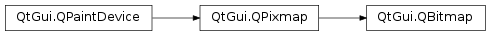

QBitmap¶
Synopsis¶
Functions¶
- def
clear() - def
swap(other) - def
transformed(arg__1) - def
transformed(matrix)
Detailed Description¶
The
PySide2.QtGui.QBitmapclass provides monochrome (1-bit depth) pixmaps.The
PySide2.QtGui.QBitmapclass is a monochrome off-screen paint device used mainly for creating customPySide2.QtGui.QCursorandPySide2.QtGui.QBrushobjects, constructingPySide2.QtGui.QRegionobjects, and for setting masks for pixmaps and widgets.
PySide2.QtGui.QBitmapis aPySide2.QtGui.QPixmapsubclass ensuring a depth of 1, except for null objects which have a depth of 0. If a pixmap with a depth greater than 1 is assigned to a bitmap, the bitmap will be dithered automatically.Use the
PySide2.QtGui.QColorobjectsQt.color0andQt.color1when drawing on aPySide2.QtGui.QBitmapobject (or aPySide2.QtGui.QPixmapobject with depth 1).Painting with
Qt.color0sets the bitmap bits to 0, and painting withQt.color1sets the bits to 1. For a bitmap, 0-bits indicate background (or transparent pixels) and 1-bits indicate foreground (or opaque pixels). Use thePySide2.QtGui.QBitmap.clear()function to set all the bits toQt.color0. Note that using theQt.blackandQt.whitecolors make no sense because the QColor::pixel() value is not necessarily 0 for black and 1 for white.The
PySide2.QtGui.QBitmapclass provides thePySide2.QtGui.QBitmap.transformed()function returning a transformed copy of the bitmap; use thePySide2.QtGui.QTransformargument to translate, scale, shear, and rotate the bitmap. In addition,PySide2.QtGui.QBitmapprovides the staticPySide2.QtGui.QBitmap.fromData()function which returns a bitmap constructed from the givenuchardata, and the staticPySide2.QtGui.QBitmap.fromImage()function returning a converted copy of aPySide2.QtGui.QImageobject.Just like the
PySide2.QtGui.QPixmapclass,PySide2.QtGui.QBitmapis optimized by the use of implicit data sharing. For more information, see the Implicit Data Sharing documentation.
-
class
PySide2.QtGui.QBitmap¶ -
class
PySide2.QtGui.QBitmap(other) -
class
PySide2.QtGui.QBitmap(arg__1) -
class
PySide2.QtGui.QBitmap(arg__1) -
class
PySide2.QtGui.QBitmap(fileName[, format=nullptr]) -
class
PySide2.QtGui.QBitmap(w, h) Parameters: - format – str
- h –
PySide2.QtCore.int - other –
PySide2.QtGui.QBitmap - w –
PySide2.QtCore.int - arg__1 –
PySide2.QtGui.QPixmap - fileName – unicode
Constructs a null bitmap.
See also
Constructs a bitmap that is a copy of the given
pixmap.If the pixmap has a depth greater than 1, the resulting bitmap will be dithered automatically.
See also
QPixmap.depth()PySide2.QtGui.QBitmap.fromImage()PySide2.QtGui.QBitmap.fromData()Constructs a bitmap with the given
size. The pixels in the bitmap are uninitialized.See also
Constructs a bitmap from the file specified by the given
fileName. If the file does not exist, or has an unknown format, the bitmap becomes a null bitmap.The
fileNameandformatparameters are passed on to theQPixmap.load()function. If the file format uses more than 1 bit per pixel, the resulting bitmap will be dithered automatically.Constructs a bitmap with the given
widthandheight. The pixels inside are uninitialized.See also
-
PySide2.QtGui.QBitmap.clear()¶ Clears the bitmap, setting all its bits to
Qt.color0.
-
static
PySide2.QtGui.QBitmap.fromData(size, bits[, monoFormat=QImage.Format_MonoLSB])¶ Parameters: - size –
PySide2.QtCore.QSize - bits –
PySide2.QtCore.uchar - monoFormat –
PySide2.QtGui.QImage.Format
Return type: Constructs a bitmap with the given
size, and sets the contents to thebitssupplied.The bitmap data has to be byte aligned and provided in in the bit order specified by
monoFormat. The mono format must be eitherQImage.Format_MonoorQImage.Format_MonoLSB. UseQImage.Format_Monoto specify data on the XBM format.See also
PySide2.QtGui.QBitmap.fromImage()- size –
-
PySide2.QtGui.QBitmap.swap(other)¶ Parameters: other – PySide2.QtGui.QBitmapSwaps bitmap
otherwith this bitmap. This operation is very fast and never fails.
-
PySide2.QtGui.QBitmap.transformed(matrix)¶ Parameters: matrix – PySide2.QtGui.QTransformReturn type: PySide2.QtGui.QBitmapReturns a copy of this bitmap, transformed according to the given
matrix.See also
-
PySide2.QtGui.QBitmap.transformed(arg__1) Parameters: arg__1 – PySide2.QtGui.QMatrixReturn type: PySide2.QtGui.QBitmapThis is an overloaded function.
This convenience function converts the
matrixto aPySide2.QtGui.QTransformand calls the overloaded function.
© 2018 The Qt Company Ltd. Documentation contributions included herein are the copyrights of their respective owners. The documentation provided herein is licensed under the terms of the GNU Free Documentation License version 1.3 as published by the Free Software Foundation. Qt and respective logos are trademarks of The Qt Company Ltd. in Finland and/or other countries worldwide. All other trademarks are property of their respective owners.